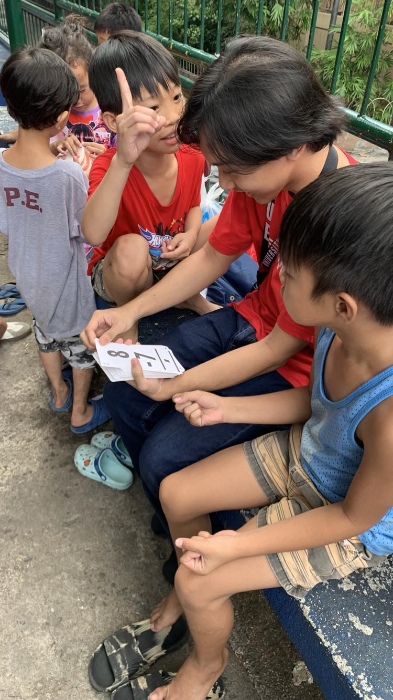
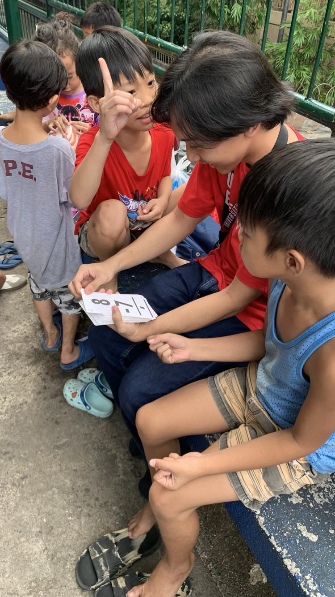

My Book of Life
Childhood Years
 From an early age, I have been fond of reading books – in our house, many illustrations and charts were pasted on our walls.[1] Being the younger of two, I was often handed down items, including reading materials like multiplication tables, anatomy of a person, dinosaurs, shades of colors, and many more.[2] Due to that, at a very young age, I was exposed to a broad number of topics.[3] When I started preschool, I was able to adapt and understand much faster than others.[4] I vividly remember one time in our school where our topic was mathematics.[5] We were grouped up sitting on a long table solving math problems.[6] Counting how many apples or fruits in the situation, we were even using the ‘bakod system’.[7] I was constantly being asked how to solve problems by my classmates.[8] Another time, our topic was about time, how to read the clock.[9]
From an early age, I have been fond of reading books – in our house, many illustrations and charts were pasted on our walls.[1] Being the younger of two, I was often handed down items, including reading materials like multiplication tables, anatomy of a person, dinosaurs, shades of colors, and many more.[2] Due to that, at a very young age, I was exposed to a broad number of topics.[3] When I started preschool, I was able to adapt and understand much faster than others.[4] I vividly remember one time in our school where our topic was mathematics.[5] We were grouped up sitting on a long table solving math problems.[6] Counting how many apples or fruits in the situation, we were even using the ‘bakod system’.[7] I was constantly being asked how to solve problems by my classmates.[8] Another time, our topic was about time, how to read the clock.[9]  Me and another classmate were competing with each other on who is faster in a fun way.[10] In elementary, I transferred to another school with a more advanced curriculum.[11] The mathematics in that school was one year higher than the enrolled year, meaning Grade 5 would take Grade 6 math.[12] In the early weeks of the school year, lessons were starting.[13] This particular lesson in math was already taught to the old students, but since I was a transferee, I did not understand.[14] I felt out of place, but since I liked reading, I was able to adapt quickly and soon follow the class, even excelling.[15] In our science subject, our teacher was asking a question.[16] Many of my classmates raised their hands to answer, but our teacher was looking for a different answer.[17] Suddenly, she said and I quote “Ikaw Riley, feel ko alam mo sagot eh”.[18] I was shocked but still, I answered, surprisingly it was correct.[19] I attribute this success to my fondness for reading.[20]
Me and another classmate were competing with each other on who is faster in a fun way.[10] In elementary, I transferred to another school with a more advanced curriculum.[11] The mathematics in that school was one year higher than the enrolled year, meaning Grade 5 would take Grade 6 math.[12] In the early weeks of the school year, lessons were starting.[13] This particular lesson in math was already taught to the old students, but since I was a transferee, I did not understand.[14] I felt out of place, but since I liked reading, I was able to adapt quickly and soon follow the class, even excelling.[15] In our science subject, our teacher was asking a question.[16] Many of my classmates raised their hands to answer, but our teacher was looking for a different answer.[17] Suddenly, she said and I quote “Ikaw Riley, feel ko alam mo sagot eh”.[18] I was shocked but still, I answered, surprisingly it was correct.[19] I attribute this success to my fondness for reading.[20]
Teenage Years
In junior high school, in addition to reading books, I also grew interested in watching shows, specifically, literature from other countries.[1] Because of this, I have been opened up to different cultures and traditions, further adding to the general knowledge I possess.[2] One time, me and my classmate, who is half-japanese, were on a call.[3] He was speaking to his father in Nihongo.[4] I heard what they were saying and after their talk, I commented on their topic.[5] He was shocked that I could understand what they were talking about.[6] This shows that even if it is just casual shows, knowledge can still be gained and used in many ways.[7] In our later years of junior high school, me and my friends got interested in history.[8] We started reading about different periods, eras, and events that occurred throughout time.[9] We even started looking for games in this subject.[10] Thus, in our lessons, we were already familiar with the topic and could actively participate.[11] Upon stepping into senior
watching shows, specifically, literature from other countries.[1] Because of this, I have been opened up to different cultures and traditions, further adding to the general knowledge I possess.[2] One time, me and my classmate, who is half-japanese, were on a call.[3] He was speaking to his father in Nihongo.[4] I heard what they were saying and after their talk, I commented on their topic.[5] He was shocked that I could understand what they were talking about.[6] This shows that even if it is just casual shows, knowledge can still be gained and used in many ways.[7] In our later years of junior high school, me and my friends got interested in history.[8] We started reading about different periods, eras, and events that occurred throughout time.[9] We even started looking for games in this subject.[10] Thus, in our lessons, we were already familiar with the topic and could actively participate.[11] Upon stepping into senior  high school, even without history lessons anymore, when it came to reporting, we had many knowledge and facts to share due to our reading of history.[12] It became a foundational trait to me now that when reporting, proper research outside the topic is necessary to give context to the topic.[13] One time when reporting a topic about earthquakes, we were supposed to discuss damage and intensity.[14] Thus, I first started with the context of the different movements of plates.[15] This helped broaden the topic that helped in understanding the way earthquakes cause damage since the movement is understood.[16] Another time, we were discussing different philosophies and philosophers.[17] Names of Thomas Aquinas, Socrates, Plato, and many more were mentioned.[18] Since these figures were also mentioned in history books due to their impacts to the wider world, I gave these contexts while reporting their philosophies to further understand how they thought given their environment and time.[19] Moreover, I connected these to the modern world and the figures around us, because of this, my classmates jokingly named me "Mr. Plato".[20]
high school, even without history lessons anymore, when it came to reporting, we had many knowledge and facts to share due to our reading of history.[12] It became a foundational trait to me now that when reporting, proper research outside the topic is necessary to give context to the topic.[13] One time when reporting a topic about earthquakes, we were supposed to discuss damage and intensity.[14] Thus, I first started with the context of the different movements of plates.[15] This helped broaden the topic that helped in understanding the way earthquakes cause damage since the movement is understood.[16] Another time, we were discussing different philosophies and philosophers.[17] Names of Thomas Aquinas, Socrates, Plato, and many more were mentioned.[18] Since these figures were also mentioned in history books due to their impacts to the wider world, I gave these contexts while reporting their philosophies to further understand how they thought given their environment and time.[19] Moreover, I connected these to the modern world and the figures around us, because of this, my classmates jokingly named me "Mr. Plato".[20]
College Years
Now in college, other than literature from Japan, I have further widened the scope of the topics I consume on a daily basis.[1] Now it includes the wider world, ranging from topics of politics, technology, geography, economy, and many more.[2] This has further opened my mind to the issues around the world and the different steps that we take to address these.[3] With more context and awareness now, I am able to participate in discussions about what is happening around us.[4] With that, I can take proper steps to plan what to do in the future.[5] Recently, my best friend and I watched a documentary about Bangladesh.[6] Specifically, the capital Dhaka and its alarming pollution level.[7] Here we saw the amount of pollution in the air, the rivers of trash, the unregulated chemicals being released into the river, the damage being done by negligence, and the life of the people living here.[8] We compared what we saw to what we experience here in our own country.[9] We said that even if we have it bad here, at least, we do not have it as they have there.[10] This does not mean that we should just accept what we have here and stop trying to be better, but it should serve as a reminder that if not acted upon properly, it can become much worse.[11] In another documentary, we saw the social disparity in an Indian city where people of poverty are next to the people who live in high rises.[11] This, we compared to our Bonifacio Global City where luxury and order is maintained while nearby slums and poverty is rampant.[13] But in that documentary, even though everything seems bad, there are people who try to make a change.[14] The tour guide of the video has their own free education to children so that those children can make their way out of poverty.[15] Other than documentaries about the world, I have also been reading novels.[16] This is to take my mind off the busy world that is sometimes overwhelming.[17] In this world of words and imagination, many things can happen and my mind is at ease.[18] I can spend hours reading chapters after chapters barely recognizing the time already.[19] Even while writing this biography and HTML, I sometimes read the novels to relax and clear my mind.[20]
I have further widened the scope of the topics I consume on a daily basis.[1] Now it includes the wider world, ranging from topics of politics, technology, geography, economy, and many more.[2] This has further opened my mind to the issues around the world and the different steps that we take to address these.[3] With more context and awareness now, I am able to participate in discussions about what is happening around us.[4] With that, I can take proper steps to plan what to do in the future.[5] Recently, my best friend and I watched a documentary about Bangladesh.[6] Specifically, the capital Dhaka and its alarming pollution level.[7] Here we saw the amount of pollution in the air, the rivers of trash, the unregulated chemicals being released into the river, the damage being done by negligence, and the life of the people living here.[8] We compared what we saw to what we experience here in our own country.[9] We said that even if we have it bad here, at least, we do not have it as they have there.[10] This does not mean that we should just accept what we have here and stop trying to be better, but it should serve as a reminder that if not acted upon properly, it can become much worse.[11] In another documentary, we saw the social disparity in an Indian city where people of poverty are next to the people who live in high rises.[11] This, we compared to our Bonifacio Global City where luxury and order is maintained while nearby slums and poverty is rampant.[13] But in that documentary, even though everything seems bad, there are people who try to make a change.[14] The tour guide of the video has their own free education to children so that those children can make their way out of poverty.[15] Other than documentaries about the world, I have also been reading novels.[16] This is to take my mind off the busy world that is sometimes overwhelming.[17] In this world of words and imagination, many things can happen and my mind is at ease.[18] I can spend hours reading chapters after chapters barely recognizing the time already.[19] Even while writing this biography and HTML, I sometimes read the novels to relax and clear my mind.[20]